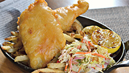
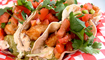

Wild Lingcod is a good source of protein, low in saturated fat with a moist sweet flesh. It is unique to the West coast of North America with an abundance off the Coast of British Columbia. A mature lingcod can reach up to 5 feet long and has a distinct large mouth and numerous sharp teeth.
Lingcod vary in color from grey-brown to green and bluish, with darker spotting and mottling on upper parts. The preferred habitat for lingcod varies depending on age and gender of the fish. Larvae are pelagic both nearshore and offshore. When 8-10 cm long (3 months), juveniles begin to settle in sand, gravel and eelgrass in bays, estuaries and shallow soft bottoms, then at ages one to two years, move to rocky bottom areas. Adults are often found on rocky bottom substrate from the intertidal zone to more than 300 m depth on the continental shelf, but typically prefer 0 to 70 m depth.
Its mild flesh is moist and is often preferred over halibut (total fat 0.6 grams per 100 grams). All sources of lingcod from British Columbia are ranked as “Best Choice”.

Tempura Wild Rose Beer-Battered Lingcod & Coleslaw
2 12 oz lingcod fillets, cut into 3 oz portions, 350 mL Wild Rose Electric Avenue Golden Lager, 375 mL tempura flour, canola oil for frying, coleslaw for serving.
Directions for: Tempura Wild Rose Beer-Battered Lingcod & Coleslaw at foodnetwork.ca >>

Fish Tacos
18 1 ½ oz slices fresh lingcod, tempura batter, 2 L canola or vegetable oil, 18 fresh whole corn tortillas, 1 cup grated Monterey Jack cheese, ½ heads green cabbage, fresh tomato salsa, avo-tillo Sauce, chipotle mayo, 1 bunch cilantro, 6 limes.
Directions for: Fish Tacos at foodnetwork.ca >>
*All of our products are 100% wild and harvested from the pristine coastal waters of British Columbia. We provide sustainable seafood that is flash frozen at sea ensuring premium quality products. Our products are Ocean Wise® approved which means they are recommended by the Vancouver Aquarium as an ocean friendly seafood choice.